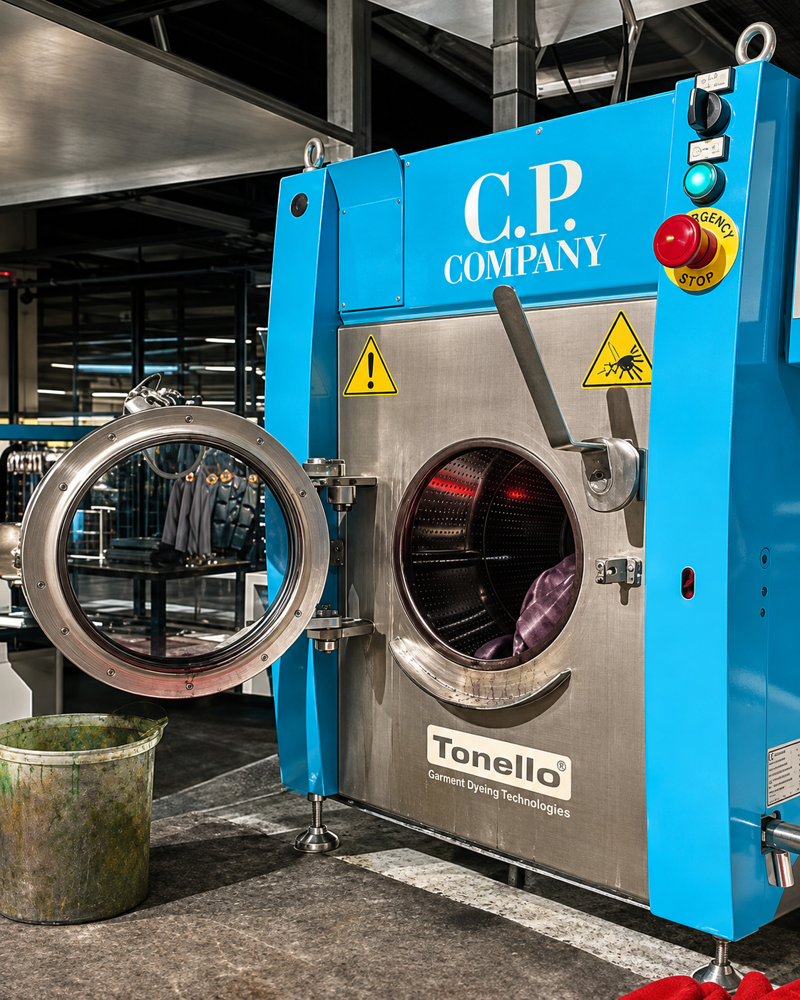
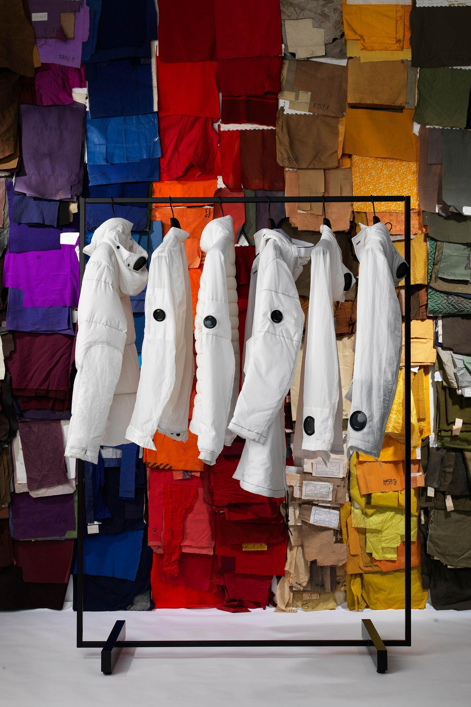
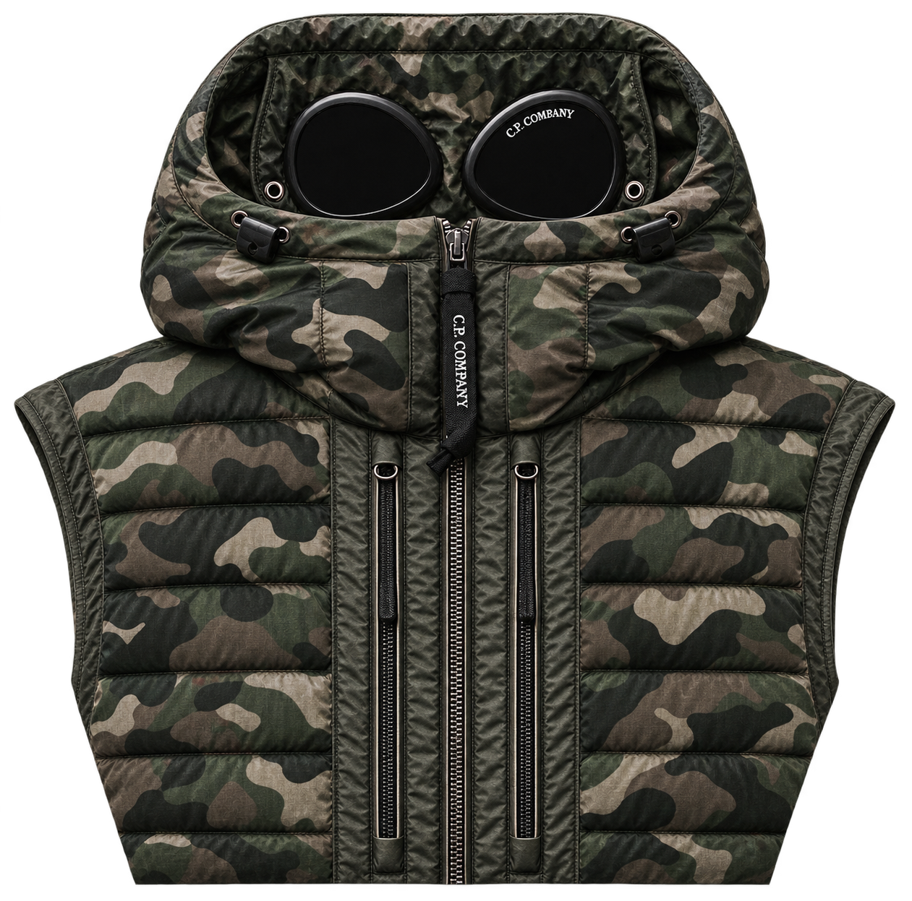
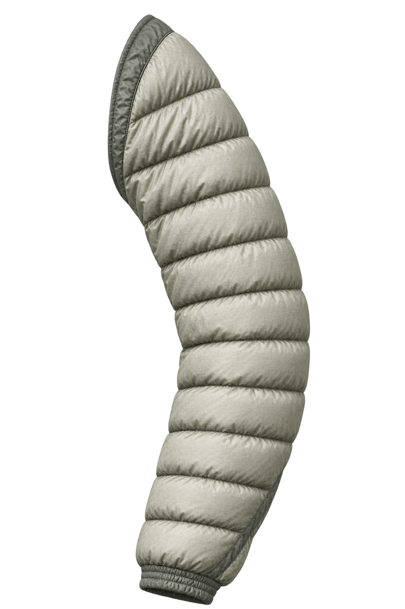
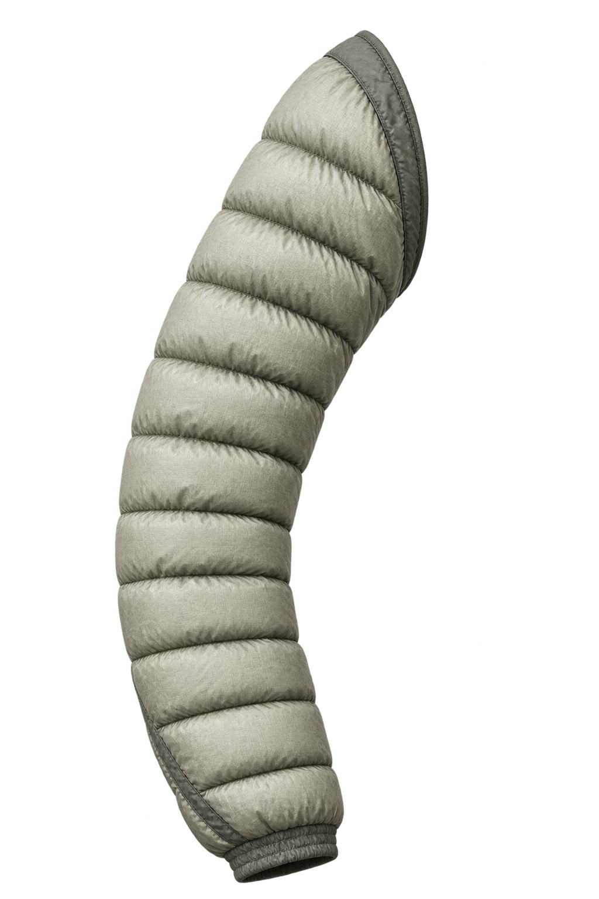
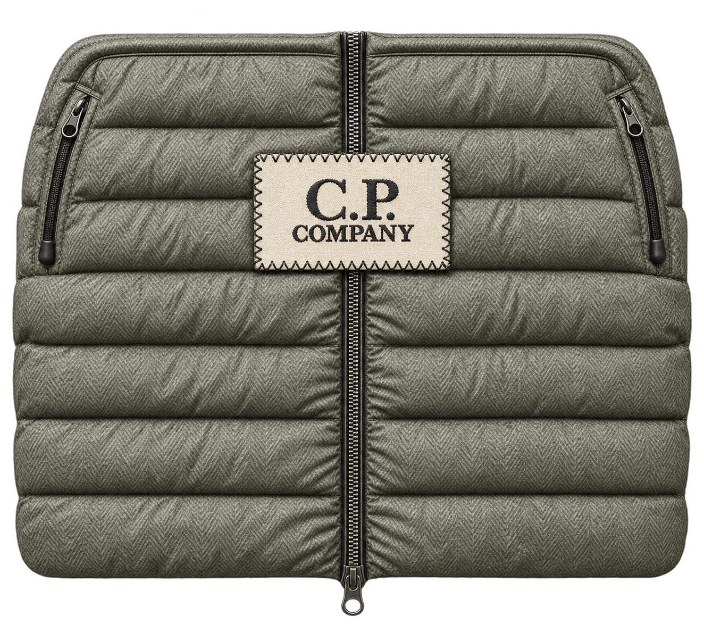
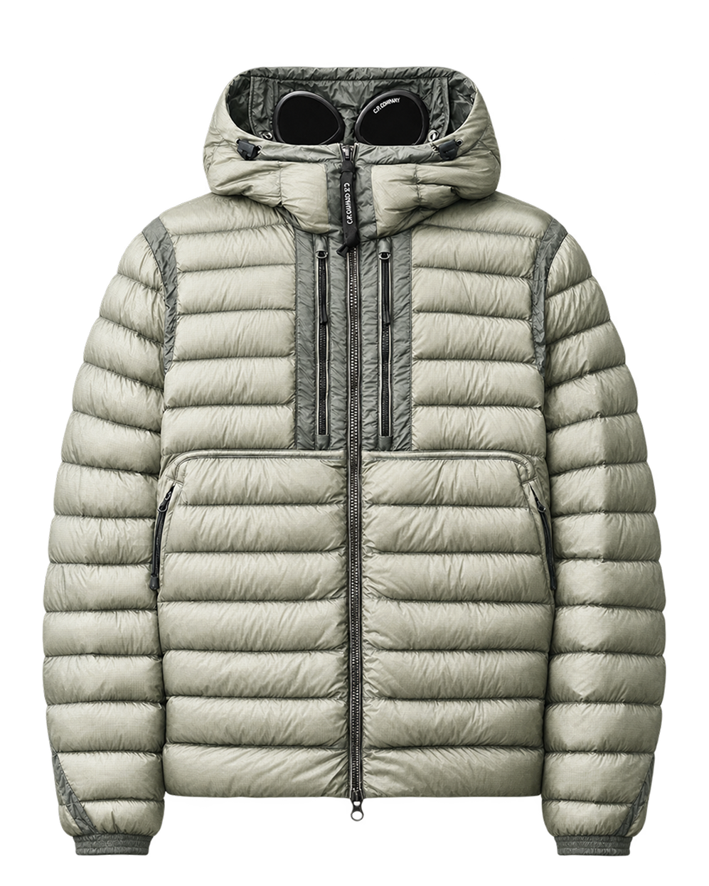

소재가 지닌 가능성을 탐구하다
섬유별 염료 흡수율과 수축 특성을 비교·분석하고, 소재의 특성에 적합한 염색 조건과 색채 표현의 가능성을 연구합니다.
BEYOND MATERIALS
C.P. COMPANY는 끊임없는 소재 연구와 실험을 통해 의복의 새로운 가능성을 탐구합니다. 완성된 의류에 색을 입히는 가먼트 다잉부터 정교한 패턴 설계까지, 모든 제작 과정에는 기능성과 혁신을 향한 브랜드의 철학이 담겨 있습니다. 소재와 기술의 결합을 통해 실험적인 의복을 새로운 형태로 발전시킵니다.
다양한 염색과 가공 실험을 통해 소재의 새로운 가능성을 관찰하고 기록합니다.



섬유별 염료 흡수율과 수축 특성을 비교·분석하고, 소재의 특성에 적합한 염색 조건과 색채 표현의 가능성을 연구합니다.
염색 과정에서 발생하는 수축과 형태 변화를 고려하며, 의도한 실루엣과 기능을 유지할 수 있도록 의류의 구조를 설계합니다.
완성된 의류를 염색조에 투입하고, 섬유별 염색 반응의 차이를 활용하여 깊이 있는 색감과 미묘한 톤의 변화를 구현합니다.
섬유와 방직 구조에 따라 나타나는 색상 변화와 표면의 변화를 활용하며, 염료마다 고유한 색채의 질감을 완성합니다.




밀리터리에서 영감을 받은 위장 패턴을 현대적인 감각으로 재해석하여 브랜드 특유의 실용적이고 개성 있는 디자인을 표현합니다.
일정한 간격으로 반복되는 봉제선이 만들어내는 패턴. 패딩의 충전재를 구획하면서 의류 표면에 규칙적인 입체감과 볼륨을 형성합니다.
신체의 움직임을 고려한 입체적인 패턴 설계로 활동성과 편안한 착용감을 높입니다.
V자 형태가 반복되는 직물 무늬. 사선이 교차하는 촘촘한 조직으로 단색 의류에도 섬세한 표면 질감과 깊이감을 더합니다.
( PATTERN )

형태는 기능에서 시작된다.